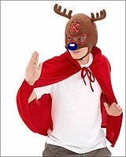

Frikilibro:Pancho el reno
 De: La Frikipedia, la enciclopedia extremadamente seria.
De: La Frikipedia, la enciclopedia extremadamente seria.
Pancho el reno es un cuento de navidad que le leen a los niños pequeños cuando generalmente todavía siguen estando críos pero este libro trata de un reno de nacionalidad rusa, que se llamaba pancho y era diferente a los demás lo cual es mentira pero solo pusieron eso en el libro para que tuviera un valor fundamental que aprender: Burlarse de las personas (en este caso renos) diferentes.
 Pancho el reno + caperucita roja...
Mientras la madre de pancho el reno (que se llamaba dubraska (típico nombre ruso)) estaba embarazada muy gilipollas se puso a comer uvas, moras, pintura azul, play doll azul, etc... ya que estos eran los antojos que se le presentaban en el embarazo de pancho lo cual tuvo una grave consecuencia: la madre de pancho, deyanira tuvo una diarrea de su puta madre y el niño, es decir, el renito que traía dentro del vientre nació con la nariz decolorada y pintada azul ciclamino...
- Deyanira (madre de pancho): ¡¡AAAAAAHHHHHHH!!, hijo de p*** ya sal de ahi ca****....
- *Se escucha un extraño sonido como un Pedo*
- Pancho (el reno): ¡¡Ñaaaa!!--- ÑaaaÑAaaa..
- Deyanira (madre de pancho): Por dios, sus primeras palabras....
- Escritor: Deyanira, apegate al guión.
- Deyanira (madre de pancho): Por dios, es tan lindo que mañana lo venderé por eBay.
- Reno adulto aleatorio: Creó que no podrás venderlo ya que...
- *Silencio dramatico*
- Reno adulto aleatorio: ... ¡¡Tiene la nariz azul!!
- Deyanira (madre de pancho): ¿Y?.
- Reno adulto aleatorio: Pues... es de mala calidad.
La madre de pancho ya un poco triste decide no venderlo y quedárselo...
Capítulo 2:La nariz diferente
Cuando a pancho el reno lo pario su puta madre, este nació común y corriente aunque un poco más corriente del reno común, este reno se llamaba pancho y tenia la nariz azul como una mora (de las que son moradas pero se les dice azules) la cual era motivo de burlas por los otros renos y los hijos de estos y algunas personas y también Uno que pasaba por allí...
- Reno aleatorio #1: ¿Qué no deberías tener la nariz roja?, así como todo reno normal que sale en los cuentos.
- Pancho (el reno): No, y tu tampoco la tienes roja y salimos en un cuento
 .
.
- El mismo Reno aleatorio: Pero el cuento debería tener un reno con nariz roja..
- *El escritor del cuento comienza a borrar los diálogos del reno aleatorio*.
- Reno friki aleatorio #2: Lol, tienes la nariz azul
 .
.
- Pancho: Y tú no tienes pene .
- Reno friki aleatorio #2: Ehm... pues tú eres solo un personaje de un cuento mal escrito.
- Pancho: ¿Y? Con decir eso no te saldrá pene.
- *Reno friki aleatorio #2 se va al rincón*
- Reno friki aleatorio #2: *Forever Alone*.
Pero en este cuento Pancho el reno no era un inocente reno que se aguantaba las burlas... pancho se defendía con uñas, dientes y nariz que por cierto era azul un buen motivo para hacerle burla hasta morirse de la risa.
Capítulo 3: pancho y las burlas
Después de que los demás renos se dieron cuenta que pancho tenia la nariz de otro color decidieron hacer una revolución para molestarlo... y ese día fue cuando Hitler se inspiro en los demás renos racistas burlones...
- Reno aleatorio #3 ¡¡Miren!! tiene la nariz ..
- Reno aleatorio #4: ¿ya casi terminas?.
- Reno aleatorio #3 ¡Azuuuuuuuuuuuuuuuul! ..
- Reno aleatorio #4: No es tan gracioso... .
- Reno aleatorio #5 No será gracioso pero ese reno es diferente, tenemos que molestarlo es una ley de la vida.
- Reno aleatorio #4: Cierto .
- Varios renos a manera de dueto: Tiene la nariz azul y aquí no se que puede rimar... pero la tiene azul.
- Pancho (el reno): FFFFFFFFFFFFFFFFFFFFFUUUUUUUUUUUUUUUUUUUUUU-.
- *Pancho saca una AK-47 de su bolsillo trasero y comienza a disparar*.
Después de los disparos se dice que no quedó nadie vivo ,solo Pancho ,entonces él se percato de lo que había hecho ;luego... un poco más calmado juntó los casquillos de su AK-47 y se los puso de nuevo ya que las balas son muy caras como para andar desperdiciandolas así.
Capítulo 4: Pancho solo y sin renos
Después de que pancho matara accidentalmente a 196 renos alguien que lo registraron como anónimo porque si no le iba de puta madre con pancho y su mejor amiga AK-47, decidió poner el tema de los renos muertos a juicio en la cuál Pancho quedó inocente gracias a que la madre del mismo fue la defensora con su amiga AK-103 a lo que el juez decidió ponerlo en libertad.
- Pancho (el reno): Quedé en libertad :D.
- Dubraska (madre de pancho): Si lo sé, yo te defendí y además lo acabo de leer acá arriba.
- Pancho (el reno): ¿Y ahora que hago?.
- Dubraska (madre de pancho): Pues trata de dominar el mundo... .
- Pancho (el reno): No, eso se lo dejaré a Pinky y Cerebro.
Pancho se encontró de pronto sin nada que hacer hasta que...
Capítulo 5: Santa ,baja a la aldea
Santa ,baja a la aldea de los renos y ve a Pancho muy triste y angustiado sentado en una banca del parque hablando con su mejor amiga AK-47, entonces santa claus se acerca...
- Santa claus: ¿Que mierda haces hablando con esa pistola?.
- Pancho (el reno): Lo mismo que tú haces hablando conmigo... .
- Santa claus: Ehm... ¿y donde están los demás renos?.
- Pancho (el reno): Accidentalmente mate a todos.
- Santa claus: ¿¿Y ahora qué hago??, ya casi es navidad y tengo un chingo de regalos que entregar y pues cómo hago no puedo irme caminando ,está bien lejos y tengo pie de atleta y me apesta a cu...
- Pancho (el reno): Pues yo te ayudo.
- Santa claus: Vale vámonos, por cierto... ¡¡¡¡¡¡¡TIENES LA NARIZ AZUL!!!!!! .
Pancho decidió irse con el pedofilo compañero santa claus a trabajar entregando regalos por todo el mundo y jamás ninguno volvió a pararse por la aldea, ni por la casa de campo de santa claus.
Epilogo

|
El era pancho el reno, que tenia la nariz azul como una mora y con un brillo singular
todos sus compañeros se reían sin cesar y nuestro buen amigo sacaba su AK-47
Pero navidad llegó... santa claus bajó y a pancho lo eligió porque ya habia matado a todos
Tirando del trineo va pancho muy feliz y desde ese momento... santa claus desapareció
|

|
| El narco-corrido de pancho el reno
|
Después de la historia de Pancho, se le hizo un narco-corrido que no rima... pero dice la pura verdad.
Fin
¿Sabias qué...
- ...Al principio del cuento puse que pancho tenia la nariz negra color aguacate, pero al final me di cuenta que todos los renos la tenían negra?.
- ...La mamá de pancho no tenia ese nombre, sino tenia el nombre de "juana" un nombre muy ruso?.
- ...Pancho hizo su cena de navidad con los renos que mató accidentalmente?.
- ...Ehm... verde?.
- ...Santa claus no eligió a pancho por tener la nariz azul como lo dice el cuento original sino que lo eligió porque ya no quedaban más renos?.
- ...Al terminar de ayudarle a santa claus, Pancho se durmió como 3 días de tanto cansancio de jalar a santa claus y millones de regalos?.
Creditos
Escritor: Un sujeto.
Narrador: El mismo sujeto.
Compra de renos: www.vendorenos.com.
Precaución: En este libro no se lastimó a ningún reno con AK-47 así que no se aceptaran demandas de "protectores de animales".

|
Libros basados en hechos reales
|
Autor(es):
- Gñapero Solitario
- Shadowmura
- Generibot
- Otakuyaoi
Frikipedia 2005-2016, Licencia
GFDL 1.2 - Extraído por FrikiLeaks